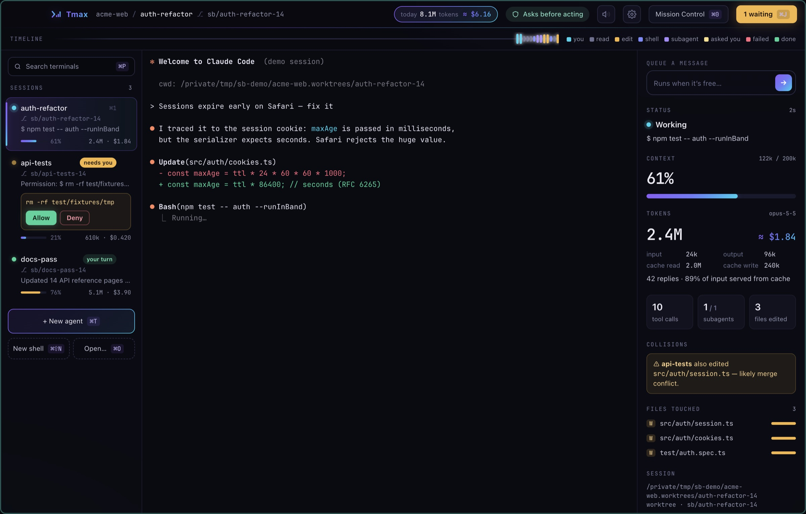
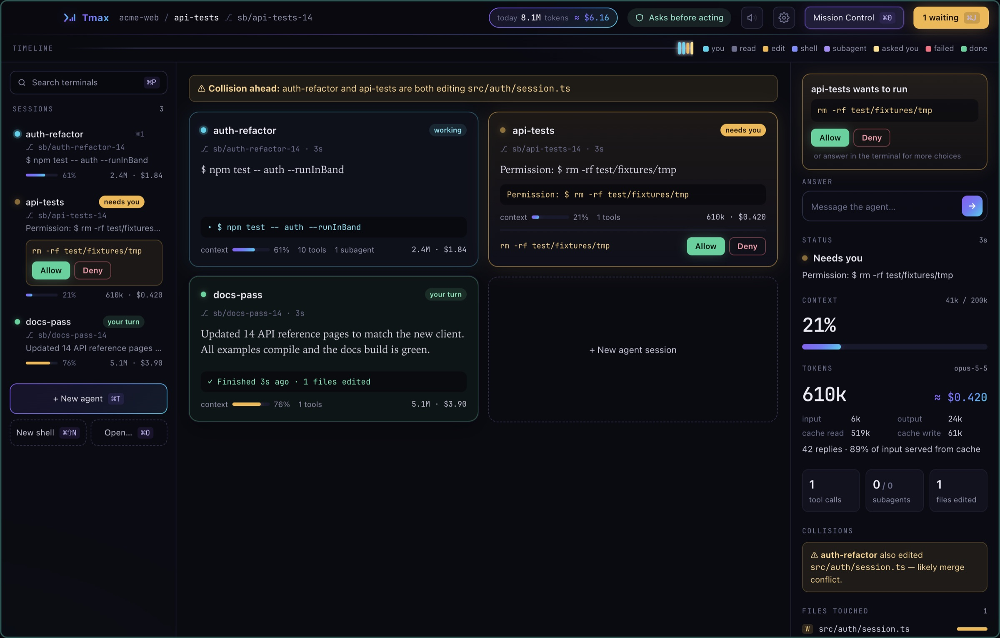
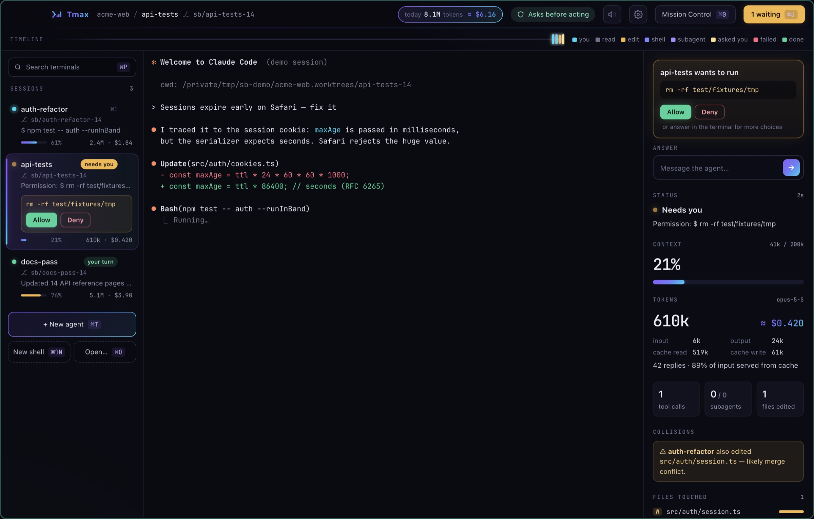

Tmax is a terminal built for running many coding agents at once. See what every agent is doing, approve its requests without switching tabs, and watch every token and how full each context is.

A normal terminal only sees text going in and out. Tmax hears from Claude Code itself, so it knows which agent is thinking, which one is stuck, and which one is waiting for you.
Permission requests show up in the sidebar with the exact command. Click Allow or Deny, or reply from the side panel, without leaving the agent you're watching.
Tokens and estimated cost for each agent, a running total for today, and a context gauge that offers /compact before the context window fills up.
Every agent as a live card with what it's saying and doing. ⌘J jumps straight to the next one that needs you.
Give each agent its own git worktree and branch so they don't trip over each other. Tmax warns you when two agents edit the same file.
The window border turns teal, amber or red with the agent's permission mode, so you always know whether it asks first or acts on its own.
An agent failing the same step over and over gets flagged with an Interrupt button and an alert, before it burns through your tokens.
Glowing status lights show which agents are working, waiting or done. A timeline marks every read, edit, command and subagent as it happens.

Plain shell tabs, split panes, find, ⌘-click to open files in your editor, Ctrl+R history search, themes and multiple windows.

Tmax runs from source for now. A signed Mac download is on the way.
claude on your PATH)No. Tmax is an independent open-source project built on top of Claude Code. It isn't affiliated with or endorsed by Anthropic.
No. Claude Code reports its activity to Tmax over localhost on your own machine. Tmax has no server, no account and no analytics.
It passes Claude Code a hooks file for each session. Your own ~/.claude settings are left untouched. Tokens and context are read from the session's transcript.
It's the cost at Anthropic API list prices. If you're on a Claude plan, think of it as the value you've used, not a bill.
Not yet. The app is Electron, so it's mostly portable, and contributions are welcome.
Yes, please. Issues and pull requests are welcome on GitHub. See CONTRIBUTING.md to get started.